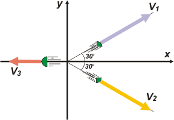
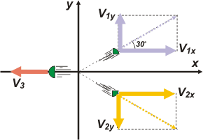

NO ME SALEN
PROBLEMAS RESUELTOS DE FÍSICA DEL CBC
(Leyes de conservación, choque explosivo)
|
|

|
3.18- Una masa de 2,00 kg en reposo que contiene
una pequeña carga explosiva de masa despreciable
se desintegra en tres fragmentos. Dos
de ellos tienen masas idénticas de 0,50 kg cada
uno; el tercero tiene una masa de 1,00 kg. Las velocidades
de los fragmentos de 0,50 kg forman
un ángulo de 60º entre sí y la magnitud de dichas
velocidades es de 100 m/s.
Entonces el módulo de la velocidad del fragmento
de 1,00 kg será:
a) v3 = 6,6 m/s b) v3 = 86,6 m/s
c) v3 = 50,5 m/s
d) v3 = 22,2 m/s
d) v3 = 70,1 m/s d) v3 = 100 m/s
|
Una explosión funciona, mecánicamente, igual que un choque plástico. Es lo mismo que un choque plástico pero visto en cámara reversa: el antes es el después y viceversa.
Lo que a nosotros nos interesa es: la cantidad de movimiento total del sistema se conserva durante la explosión (lo que valía antes de explotar es lo mismo que lo que vale después). |
 |
|
|
|
ΔPT = 0
PTa = PTd
(Cantidad de movimiento total antes de la explosión, igual a la cantidad de movimiento total después de la explosión). La cantidad de movimiento antes de la explosión vale cero, porque la masa estaba en reposo, en ese lugar, que arbitrariamente elegí como origen del SR. Y la cantidad de movimiento después de la explosión está repartida en tres fragmentos, de masas m1, m2 y m3, donde las dos primeras valen medio kilo y la tercera 1 kilo. La ecuación queda así:
0 = m1 v1 + m2 v2 + m3 v3
Claro está, se trata de una relación vectorial (yo no le puse la flechita a las velocidades porque en html es un &%$#@ ) Y encima es una relación vectorial bidimensional, de modo que descomponemos las velocidades en dos direcciones y planteamos nuevamente la relación pero ahora componente por componente.
en el eje x → 0 = m1 v1x + m2 v2x + m3 v3x
en el eje y → 0 = m1 v1y + m2 v2y + m3 v3y |
|
|
Queda claro que v3y vale cero. Y también te debe quedar claro que
v1x = v1 cos 30º
v1y = v1 sen 30º
v2x = v2 cos 30º
v2y = v2 sen 30º
|
 |
|
|
|
Entonces las ecuaciones de movimiento quedarán así:
0 = m1 v1 cos 30º + m2 v2 cos 30º — m3 v3x
0 = m1 v1 sen 30º — m2 v2 sen 30º
Esta segunda no aporta gran cosa (por ahora), pero de la primera, recordando que m1 = m2 = ½ m3, se puede despejar
2 m v3 = m v1 cos 30º + m v2 cos 30º
|
|
|
| |
v3 = 86,6 m/s |
respuesta b) |
|
|
|
| |
|
|
DISCUSION: La discusión va a tener dos partes. La primera tiene que ver con un error de planteo. El ejercicio éste está mal resuelto. El motivo es que se da por supuesta una obviedad, que es que el fragmento 3 sale despedido en la dirección bisectriz de las direcciones de los otros dos fragmentos (o sea que el problema es simétrico respecto del eje x). Y así ocurre, efectivamente. Pero una cosa es que sea obvia y otra cosa es demostrarlo. Deberíamos haberlo hecho previamente, y después sí resolver como resolvimos. No hubiese sido muy grave, pero temía confundirte de entrada si ponía en duda semejante obviedad. Basta con suponer una velocidad v3 que forme un ángulo α3 con el eje x, descomponer ese vector y meterlo en las ecuaciones. La ecuación del eje y te hubiera avisado (viste que yo puse "por ahora") que α3 valía cero.
La segunda parte de la discusión es más interesante. Te habrás dado cuenta que la ley de conservación de la cantidad de movimiento es reversible, o sea, no distingue el antes del después, ni el después del antes. Lo mismo ocurre con el resto de las leyes de conservación de las que disponemos. De hecho hay una sola Ley que distingue el sentido natural del discurrir del tiempo, se trata de la 2da. Ley de la Termodinámica (a mi juicio la más bonita de la Física), que debido a esa notable característica ha recibido el mote de "la flecha del tiempo". |
|
 |
| DESAFIO: Para que te lo tomes con calma. El mismo problema, pero los únicos datos que se disponen son: que las masas guardan la relación m1 = 2 m2 = 3 m3, y la velocidad del fragmento 1 es 100 m/s, y se quiere saber qué ángulo forman las velocidades entre sí y cuánto valen las dos que faltan. |
|
| Algunos derechos reservados.
Se permite su reproducción citando la fuente. Nadie se explica cómo apareció escrita acá esta palabra: caca. Última actualización dic-06. Vencimiento dic-86. Buenos Aires, Argentina. |
|
|
|